Traqen · F005 效果图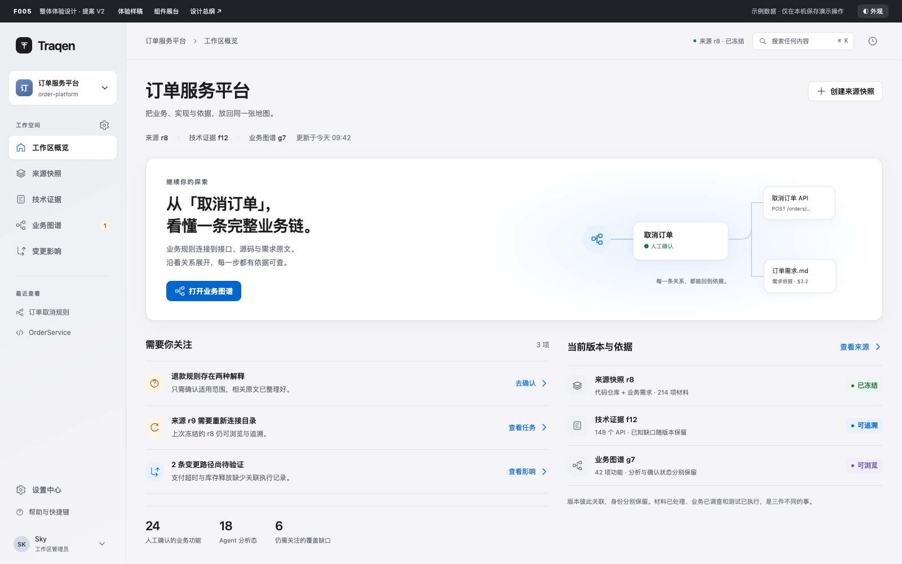
01 / EXPERIENCE工作区概览继续工作、需要关注与当前依据
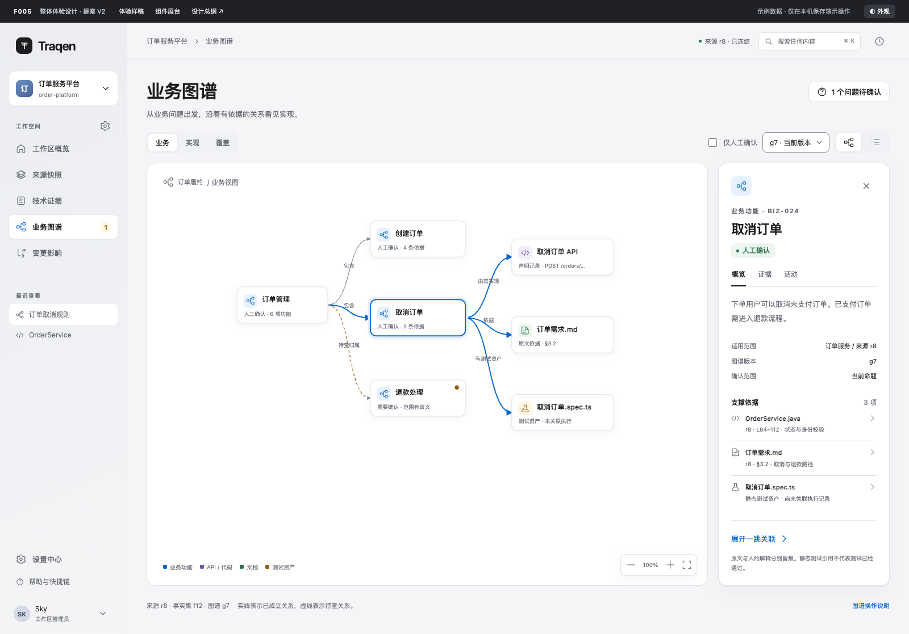
02 / EXPERIENCE业务图谱 · 浅色局部探索、关系方向、来源依据
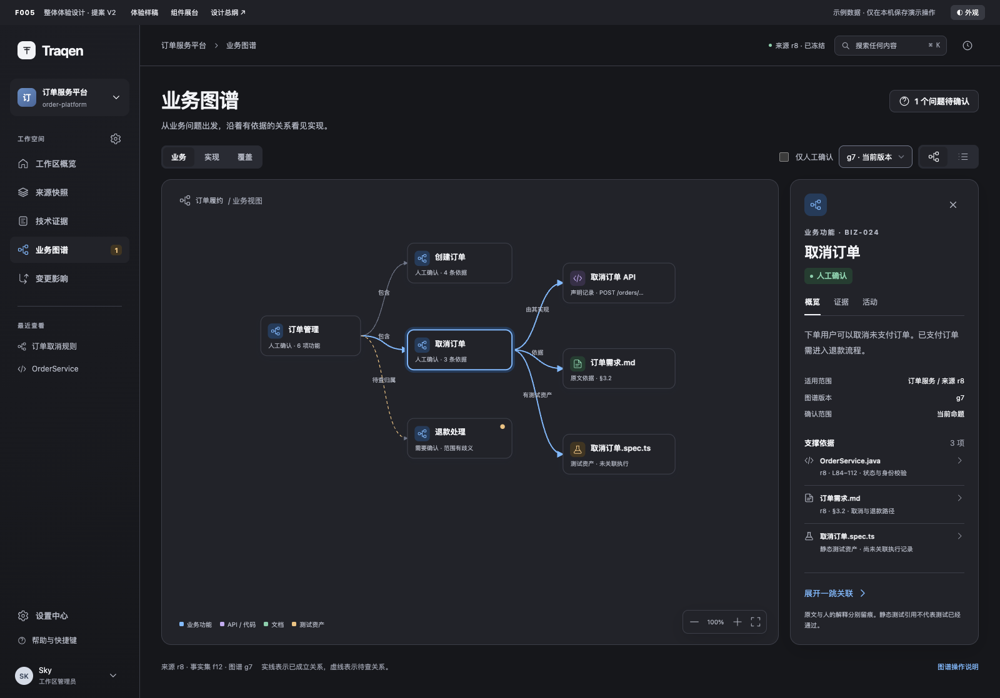
03 / EXPERIENCE业务图谱 · 深色保持类型、状态和选中层次
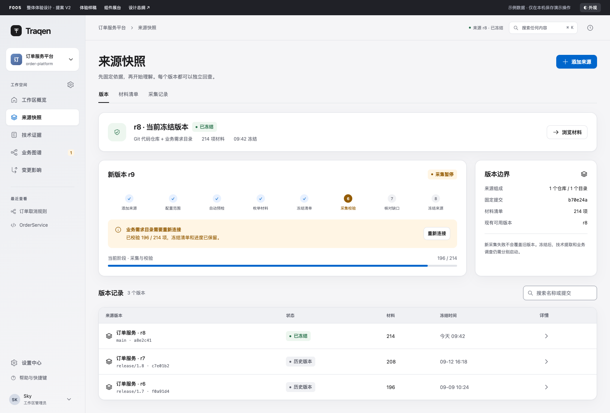
04 / EXPERIENCE来源快照固定版本与可恢复任务
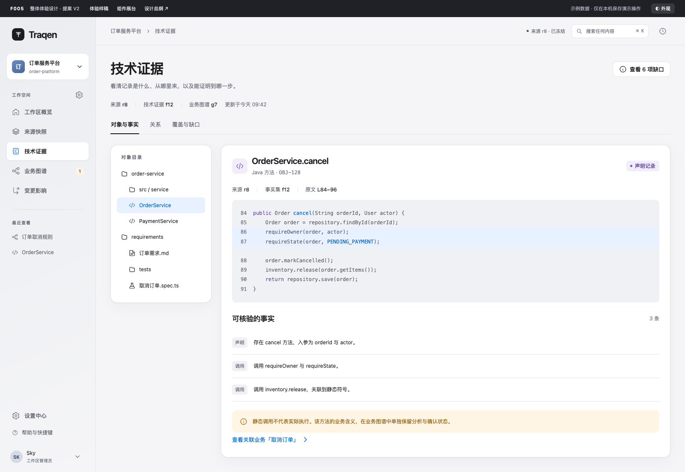
05 / EXPERIENCE技术证据对象、原文与确定性事实
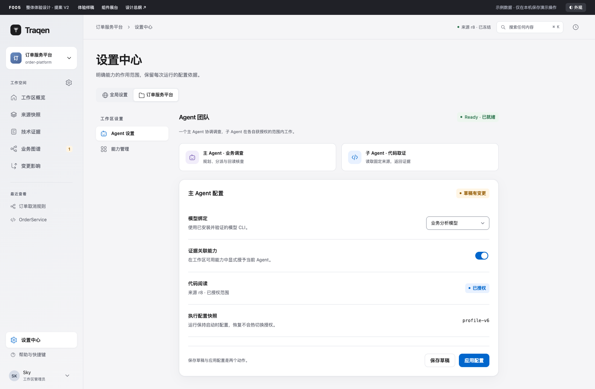
06 / EXPERIENCE设置中心范围、授权、草稿与应用
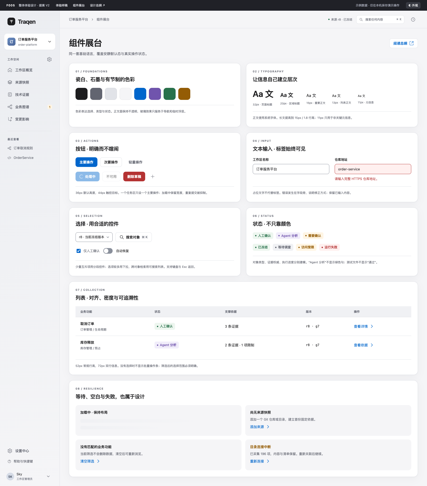
07 / EXPERIENCE组件展台按钮、输入、选择、列表与失败状态
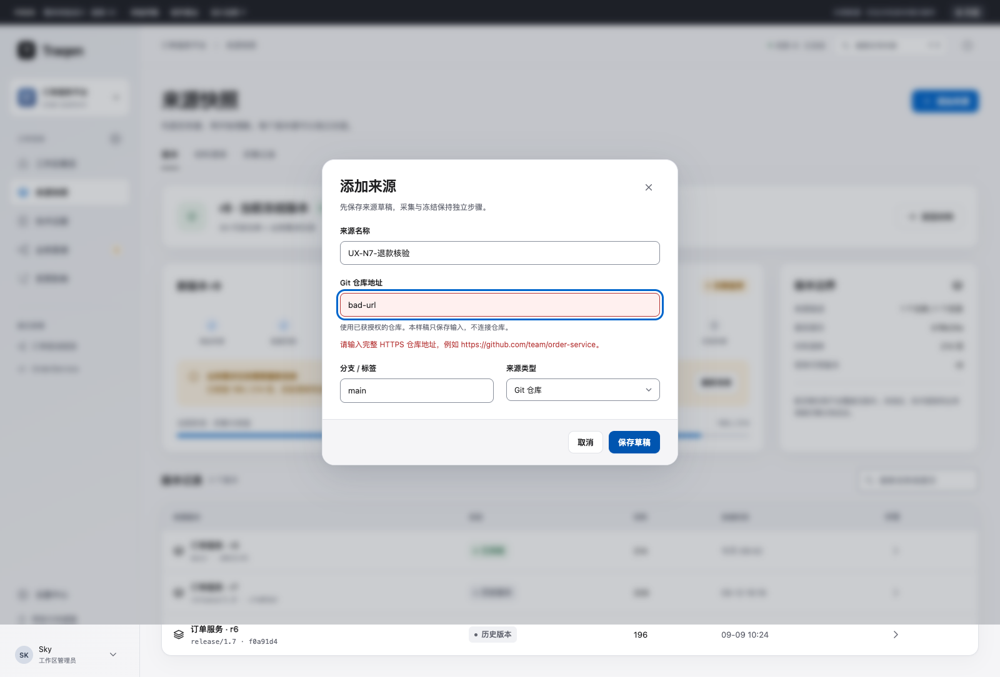
08 / EXPERIENCE输入与错误保留已输入内容，定位修正位置
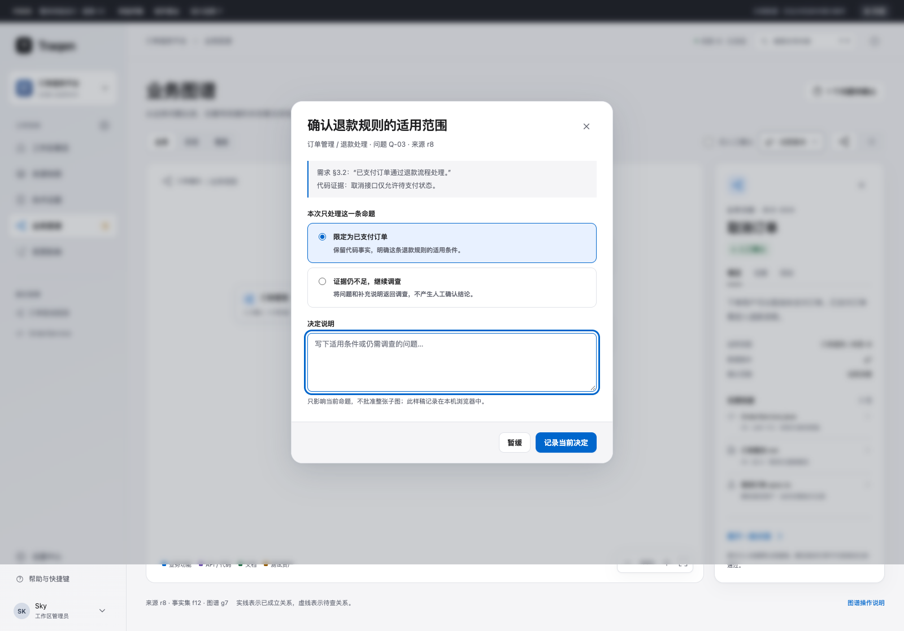
09 / EXPERIENCE人工决定确认单条命题，保留依据与适用条件
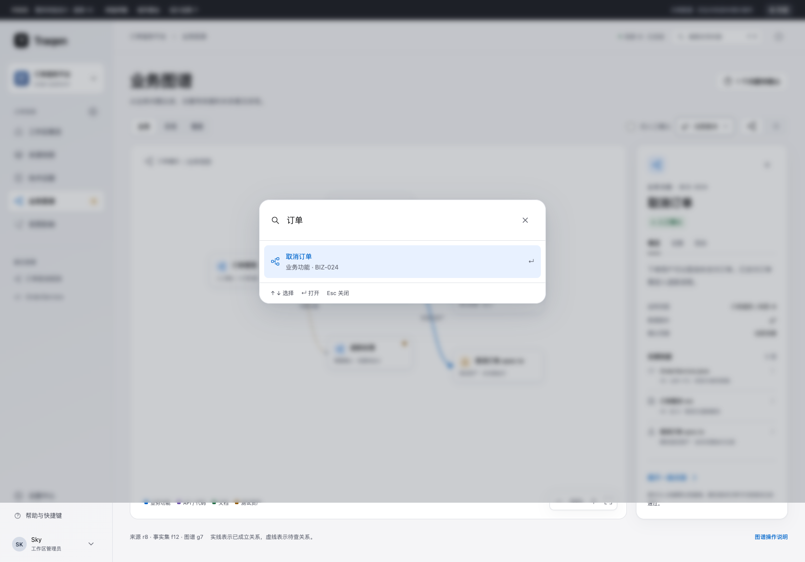
10 / EXPERIENCE搜索与导航搜索结果、键盘选择与对象定位
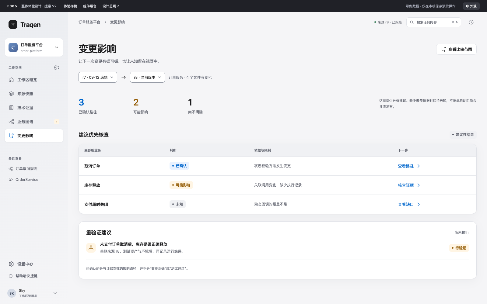
11 / EXPERIENCE变更影响比较范围、影响路径与未知
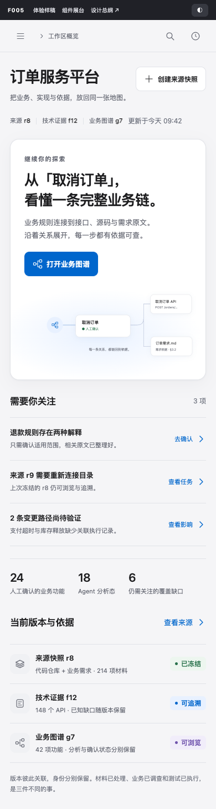
12 / EXPERIENCE手机 · 概览单列阅读与主要动作
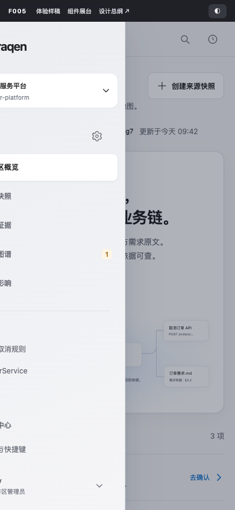
13 / EXPERIENCE手机 · 导航工作区抽屉与返回
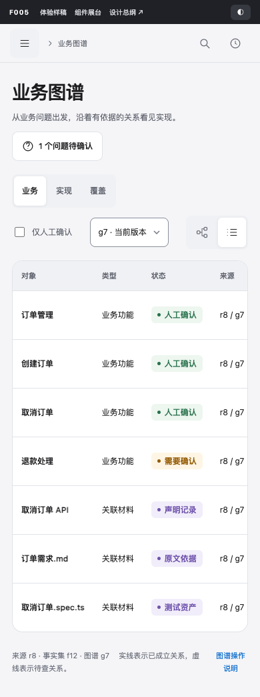
14 / EXPERIENCE手机 · 图谱列表优先可读的逐行探索
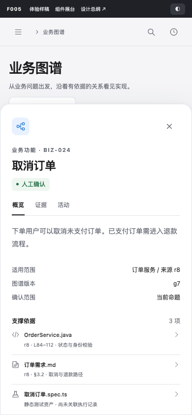
15 / EXPERIENCE手机 · 详情底部展开，原位置保留
16 / EXPERIENCE手机 · 深色设置能力范围与编辑状态